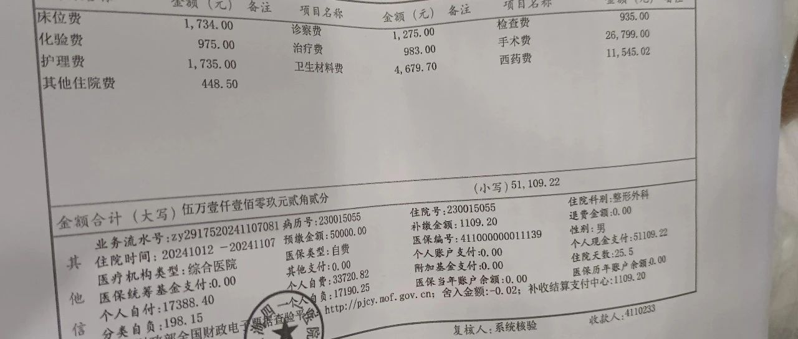

《化繭成蝶34》《手術后出院證明》
在醫院住了差不多一個月，（從提前到醫院安排床位，到手術中和手術后修養身體）。手術后換藥時間，是3/6/9/12天拆包，手術前清理腸道，手術后7天禁食，第8天流食，第13天休息一天練習一下憋尿，第14天拔尿管和拆線，然後休息兩天通模，早晚各半個小時，消毒清理傷口，下體用小風扇吹乾這樣有利於傷口恢復。
出院前辦理出院手續。醫生會查看你下體是否恢復好，恢復的差不多，會給你辦理出院手續，如果傷口有感染和炎症會建議你在醫院多休息幾天，這樣醫生會時不時的，給你檢查傷口及時換藥，查看你傷口恢復的情況……
出院前醫生會給你開具，三甲醫院的手術證明，診斷證明，出院證明，出院記錄，然後到一樓大廳交費蓋章，交費處會出具醫療住院收費清單和用藥明細單據，最後辦理好出院手續等待出院。